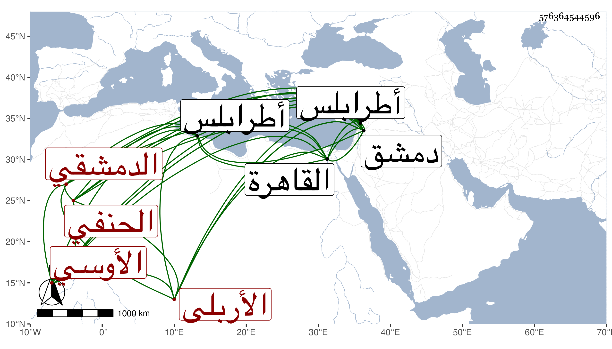

0902Sakhawi.DawLamic.ITO20230111-ara1.EIS1600.576364544596
Biography ID: 576364544596
586
محمد بن علي بن يحيى بن إبرهيم بن حسين بن سليمان الشمس الأوسي الأربلي جده الموصلي أبوه الدمشقي الحنفي ويعرف بابن الجرادقي . ولد في حدود سنة خمس وسبعين وسبعمائة بدمشق ونشأ بها فتلا القرآن بالروايات على الشهاب بن عياش والزين عمر بن اللبان والشريف حسن الفاخوري والشرف الطوسي وقرأ الهداية في الفقه وشرح الطوالع والمختصر للتفتازاني والسراجية في الفرائض وشرح مولانا زاده في الفلسفة وشيئا من المنطق ، كل ذلك على الكمال قاضي برصا والمختار على الشمس بن يهوذا والكافية على أخيه الشهاب بن يهوذا نزيل طرابلس والمتوفى بها والأصول على ابن الفنري والتصوف على جماعة أجلهم وأعلاهم السيد محمد بن علي البخاري ببلد يورسا من طريق الأثني عشر وألبسه الخرقة ولقنه الذكر ، وسمع الصحيح غير مرة بفوات على المحيوي الرحبي وغالب الموطأ على بعض أصحاب الوادياشي وقرأ على الكمال الشمني ، وأجاز له الشرف بن الكويك . ودخل القاهرة مرتين اجتمع في الثانية بالجلال البلقيني والولي العراقي وشيخنا وحضر دروس البساطي وغيره وحج مرارا . وجاور وكان إنسانا حسنا فاضلا ذا سمت حسن ووضاءة متواضعا منعزلا عن الناس مقبلا على شأنه وللناس فيه اعتقاد كبير ، لقيته بدمشق فأجاز لي ومات بها في يوم الأربعاء سادس عشري المحرم سنة اثنتين وستين بعد قدومه من المجاورة رحمه الله وإيانا .
